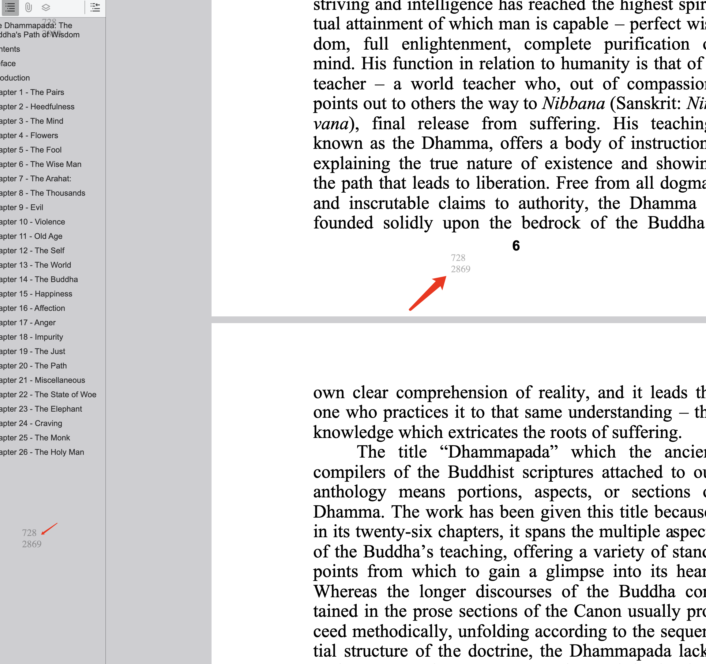

Reviewing PDF Reader Activity
Document Access Review
This article outlines common ways to review document access events for shared PDFs. It focuses on delivery records, hosted-view logs, and practical limits, rather than framing reader monitoring as a covert or adversarial process.
Legal Notice:
These detection techniques should be used only for legitimate purposes such as business intelligence, security auditing, or with proper authorization. Always comply with applicable privacy laws.
Flow Diagram
Interactive Flow Diagram
flowchart TD
A[Start] --> B[Process Step]
B --> C[Collect Data]
C --> D[Analyze Results]
D --> E[Done]
style A fill:#667eea,stroke:#764ba2,stroke-width:2px,color:#fff
style E fill:#48bb78,stroke:#38a169,stroke-width:2px,color:#fff
Why Teams Review PDF Reader Activity
Common Review Scenarios
- Leak Review - Check when a sensitive file was opened after an unexpected disclosure
- Client Delivery Checks - Confirm whether a proposal or report was accessed
- Internal Audit - Review access patterns for controlled internal documents
- Partner Distribution Review - Verify when a shared file was opened by an external recipient
- Record Keeping - Maintain an access history for compliance or operational follow-up

Common Review Methods
Method 1: Hosted Access Logging
Set up completely invisible tracking that catches readers without them knowing they've been detected.
Implementation Steps:
- Upload Target Document: Add your PDF to a professional tracking platform
- Configure Stealth Mode: Enable maximum invisibility settings
- Generate Trap Link: Create a link that appears completely normal
- Deploy Strategically: Share the link through suspected channels
- Monitor Silently: Watch for access attempts in real-time

Method 2: Controlled Delivery Links
Create irresistible "bait" documents that attract suspicious readers and capture their information.
Honey Pot Strategy:
- Compelling Content: Create documents that targets can't resist opening
- Strategic Placement: Position links where suspects are likely to find them
- Multiple Versions: Use different versions to identify specific leak sources
- Escalating Value: Make content seem increasingly valuable to encourage sharing

Method 3: Unique Document Variants
Create unique document "DNA" for each potential reader to identify exactly who accessed what.
DNA Implementation:
- Unique Identifiers: Embed invisible codes specific to each recipient
- Watermark Variations: Subtle differences that identify individual copies
- Metadata Tracking: Hidden information that traces back to source
- Behavioral Signatures: Track unique reading patterns per user

What the Logs Can Show
Data You Can Collect
- Identity Information: IP addresses, geographic locations, device details
- Access Patterns: When they read, how often, and for how long
- Behavioral Analysis: Which sections they focus on most
- Sharing Activity: If and how they distribute your documents
- Network Analysis: Corporate vs. personal access patterns
- Device Fingerprints: Unique hardware and software signatures